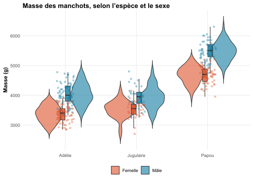

Les utilisateurs et utilisatrices de R le savent bien : les sorties de base sont hideuses. Je propose quelques fonctions assez basiques pour simplifier l’extraction de données et exporter une table de résultats pour un modèle de type lm().
Date de publication
26 janvier 2026
Point de départ
Toute personne qui a déjà utilisé R est déjà arrivée à la conclusion assez simple que les sorties en base R sont (très) moches et pas (du tout) pratiques. Commençons par un exemple, pour lequel j’utilise le jeu de données penguins, qui contient les observations réalisées sur 344 manchots en Antarctique1(Horst et al., 2020).
Ce jeu contient une observation par manchot : son sexe, espèce, la longueur de son bec, la profondeur de son bec, la longueur de nageoire, sa masse, et l’année d’observation.
Partons d’une question simple : qu’est-ce qui détermine la masse d’un manchot ? Assez naïvement, je penserais à l’espèce et au sexe du manchot. Nous avons la masse d’un manchot en gramme, le sexe du manchot (mâle ou femelle) et l’espèce du manchot (adélie, jugulaire ou papou2).
Voir le code
#### Charger les packages ####library(tidyverse);library(easystats); library(gt); library(modelsummary)# Charger les donnéesdf <- palmerpenguins::penguins %>%mutate(species =case_when( species =="Adelie"~"Adélie", species =="Chinstrap"~"Jugulaire", species =="Gentoo"~"Papou"),sex =case_when( sex =="female"~"Femelle", sex =="male"~"Mâle")) %>%# Traduire les donnéesrename(masse = body_mass_g,espece = species,sexe = sex) # Renommer les colonnesdf %>%select(masse, espece, sexe) %>%mutate(across(where(~!is.numeric(.x)),~ifelse(is.na(.x), "Manquant", .x))) %>%datasummary_skim()
Unique
Missing Pct.
Mean
SD
Min
Median
Max
Histogram
masse
95
1
4201.8
802.0
2700.0
4050.0
6300.0
N
%
espece
Adélie
152
44.2
Jugulaire
68
19.8
Papou
124
36.0
sexe
Femelle
165
48.0
Mâle
168
48.8
Manquant
11
3.2
Table 1: Description des données.
Pour commencer, explorons cette question de façon visuelle.
Voir le code
df %>%select(espece, masse, sexe) %>%drop_na() %>%# Retirer les lignes pour lesquelles une valeur est manquanteggplot() +aes(x = espece, y = masse, fill = sexe) +geom_violin(trim = F, alpha =0.6) +geom_boxplot(width =0.15, outlier.shape =NA, alpha =0.8, show.legend = F) +geom_jitter(aes(colour = sexe),width =0.12, height =0, alpha =0.35, size =1.3, show.legend = F) +scale_fill_manual(values =c(Femelle = egypt[1], Mâle = egypt[2])) +scale_colour_manual(values =c(Femelle = egypt[1], Mâle = egypt[2])) +labs(y ="Masse (g)",fill ="Sexe",title ="Masse des manchots, selon l’espèce et le sexe") +theme(axis.text.x =element_text())

Figure 1: Masse des manchots en grammes, selon l’espèce et le sexe
La masse semble effectivement dépendre du sexe, et varier selon l’espèce. J’ajuste donc la régression suivante, pour estimer cela de façon quantitative :
où \[
X_{1}=\mathbb{1}(\text{espèce}_i=\text{Jugulaire});\quad
X_{2}=\mathbb{1}(\text{espèce}_i=\text{Papou});\quad
X_{3}=\mathbb{1}(\text{sexe}_i=\text{Mâle}).
\]
La très classique fonction summary() renvoie une sortie tout aussi classique de ce modèle. Et tout aussi inélégante.
Call:
lm(formula = masse ~ espece + sexe, data = df)
Residuals:
Min 1Q Median 3Q Max
-816.87 -217.80 -16.87 227.61 882.20
Coefficients:
Estimate Std. Error t value Pr(>|t|)
(Intercept) 3372.39 31.43 107.308 <2e-16 ***
especeJugulaire 26.92 46.48 0.579 0.563
especePapou 1377.86 39.10 35.236 <2e-16 ***
sexeMâle 667.56 34.70 19.236 <2e-16 ***
---
Signif. codes: 0 '***' 0.001 '**' 0.01 '*' 0.05 '.' 0.1 ' ' 1
Residual standard error: 316.6 on 329 degrees of freedom
(11 observations effacées parce que manquantes)
Multiple R-squared: 0.8468, Adjusted R-squared: 0.8454
F-statistic: 606.1 on 3 and 329 DF, p-value: < 2.2e-16
Table 2: Régression de la masse des manchots en grammes, sur l’espèce et le sexe, selon l’Équation 1. Sortie base r.
A partir d’ici, beaucoup de personnes copient les coefficients dans leur traitement de texte. Avec un ensemble de frictions :
Si le modèle change, il faut re-copier les nouvelles estimations.
Si l’on copie manuellement, des erreurs peuvent apparaître.
L’intervalle de confiance n’est pas directement disponible lorsque l’on explore des données3.
Il n’est pas possible d’obtenir un coefficient standardisé type \(\beta\) sans ré-ajuster le modèle. Ici, ce n’est peut-être pas nécessaire car les quantités estimées ont un sens. Mais en psychologie…
Bref : on peut faire mieux4. J’ai donc rédigé une petite fonction, e que s’apelerio lm_summary(), pour extraire les résultats d’un modèle lm. Cette fonction prend deux arguments : un modèle linéaire lm (duh!) et un argument vcov pour spécifier la matrice de variance-covariance à utiliser. Elle s’appuie sur le package parameters(Lüdecke et al., 2020) pour extraire les données du modèle linéaire, puis sur dplyr(Wickham et al., 2025) pour structurer la table.
Voir le code
lm_summary <-function(model, vcov =NULL) {# Extraire les paramètres non standardisés mp <- parameters::model_parameters(model,vcov = vcov)# Extraire les paramètres standardisés (refit le modèle) mp_std <- dplyr::select( parameters::model_parameters( model,standardize ="refit",vcov = vcov), Parameter,Std_Coefficient = Coefficient,Std_CI_low = CI_low,Std_CI_high = CI_high) mp <- dplyr::left_join(mp, mp_std, by ="Parameter")# Préparer les données mp <- dplyr::mutate(mp,# Arrondir p à trois décimalesp =ifelse(p < .001, "< .001", round(p, 3)),# Arrondir les autres valeurs à deux décimales dplyr::across(dplyr::where(is.numeric), ~round(.x, 2)),# Réunir l'intervalle de confiance de l'estimate et le placer sous le CoefficientCoefficient =paste0(Coefficient, "<br>", "[", CI_low, "; ", CI_high, "]"),# Réunir l'intervalle de confiance de β et le placer sous β β =paste0(Std_Coefficient, "<br>", "[", Std_CI_low, "; ", Std_CI_high, "]"),# Conserver le modèle pour lm_tab, même après des verbes dplyr (mutate, filter, etc.).model =list(model))# Renommer les colonnes : les colonnes avec un nom simple mp <- dplyr::rename(mp, Paramètre = Parameter,Estimation = Coefficient,"Erreur standard"= SE,p = p)# Renommer les colonnes : la colonne t est un peu plus complexe, car je souhaite y intégrer le nombre de degrés de liberté de la statistique mp <- dplyr::rename_with(mp,~paste0("Statistique t (", broom::glance(model)$df.residual, ")"),.cols = t)# Ne pas garder les colonnes qui ont déjà été incorporées à d'autres, ou ne sont pas utiles mp <- dplyr::select(mp,-c(CI, CI_low, CI_high, df_error, Std_Coefficient, Std_CI_low, Std_CI_high)) mp}lm_summary(lm_1) %>%select(-c(.model)) %>%# Une colonne ".model" stocke le modèle, pour pouvoir l'envoyer dans une future fonction. C'est inélégant, mais ça fonctionne. knitr::kable()
Paramètre
Estimation
Erreur standard
Statistique t (329)
p
β
(Intercept)
3372.39 [3310.56; 3434.21]
31.43
107.31
< .001
-1.04 [-1.11; -0.96]
especeJugulaire
26.92 [-64.52; 118.37]
46.48
0.58
0.563
0.03 [-0.08; 0.15]
especePapou
1377.86 [1300.93; 1454.78]
39.10
35.24
< .001
1.71 [1.62; 1.81]
sexeMâle
667.56 [599.29; 735.82]
34.70
19.24
< .001
0.83 [0.74; 0.91]
Table 3: Régression de la masse des manchots en grammes, sur l’espèce et le sexe, selon l’Équation 1. Sortie de la fonction lm_summary() passée via knitr::kable().
Ce dataframe est un bon début à mes yeux, même s’il a des limites. Je combine cette fonction avec une seconde, qui va mettre cette table en forme. Celle-ci, lm_tab(), s’appuie principalement sur le package gt(Iannone et al., 2026).
Table 4: Régression de la masse des manchots en grammes, sur l’espèce et le sexe, selon l’Équation 1. Sortie de la fonction lm_summary() passée via lm_tab().
Ces fonctions ne me plaisent aujourd’hui qu’à moitié, car elles nécessitent de modifier manuellement le dataframe en sortie de lm_summary() pour renommer les paramètres avant de l’envoyer à lm_tab(). Si le dataframe est modifié en amont de l’ajustement du modèle, le pipe peut casser et la fonction ne plus fonctionner.
Mais, à défaut, cela permet malgré tout d’obtenir une table qui synthétise toutes les informations nécessaires de façon élégante. De plus, cette table étant un objet gt, elle peut être exportée via la fonction gtsave() pour éviter de s’embêter à copier-coller manuellement les résultats.
Mise à jour du 02.02.2026
Suite à la publication de cette note, il a été demandé “Pourquoi ne pas utiliser sjPlot::tab_model ?”. La question est légitime, je me suis donc essayé à reproduire la Table 4 via sjPlot::tab_model()(Lüdecke, 2026).
Partons de la table que la fonction exporte de base, qui est un bon point de départ, même s’il manque à mon sens l’élément le plus important : l’erreur associée au paramètre.
Voir le code
library(sjPlot)tab_model(lm_1)
masse
Predictors
Estimates
CI
p
(Intercept)
3372.39
3310.56 – 3434.21
<0.001
espece [Jugulaire]
26.92
-64.52 – 118.37
0.563
espece [Papou]
1377.86
1300.93 – 1454.78
<0.001
sexe [Mâle]
667.56
599.29 – 735.82
<0.001
Observations
333
R2 / R2 adjusted
0.847 / 0.845
Table 5: Régression de la masse des manchots en grammes, sur l’espèce et le sexe, selon l’Équation 1. Sortie de la fonction tab_model() de base.
Essayons de la personnaliser, pour afficher cette erreur, réunir l’intervalle de confiance et l’estimation, afficher la statistique t et \(\beta\).
Voir le code
lm_1 %>%tab_model(# Gérer la structure de la tableshow.se = T, # Afficher l'erreurshow.std = T, # Afficher le coefficient standardisé beta std.response = T, # Il faut préciser que la réponse doit aussi être standardisée (autrement, seuls les prédicteurs sont standardisés)show.stat = T, # Afficher la statistique tcol.order =c("est", "se", "ci", "stat", "p", "std.est", "std.se", "std.ci"), # Personnaliser l'ordre d'affichage des colonnescollapse.ci = T, # Réunir estimations et intervalles de confiancedv.labels =" ", # Ne pas afficher le nom de la variable Yshow.r2 = F, # Ne pas afficher les coefficients R²# Aspects cosmétiques de la table pred.labels =c("(Intercept)", # Modifier les noms des paramètres"Espèce : Jugulaire","Espèce : Papou","Sexe : Mâle"),emph.p = F, # Ne pas mettre les p < .05 en gras # Renommer les colonnesstring.pred ="<strong>Paramètre</strong>", # Renommer la colonne Predictorsstring.est ="<strong>Estimation<br>[IC 95 %]</strong>", # Renommer la colonne Estimatesstring.se ="<strong>Erreur standard</strong>", # Renommer la colonne Std.Errorstring.stat =paste0("<strong>Statistique <em>t</em> (", insight::get_df(lm_1), ")</strong>"),string.p ="<strong><em>p</em>-valeur</strong>",string.std ="<strong><em>β</em><br>[IC 95 %]</strong>")
Paramètre
Estimation
[IC 95 %]
Erreur standard
Statistique t (329)
p-valeur
β
[IC 95 %]
standardized std. Error
(Intercept)
3372.39
(3310.56 – 3434.21)
31.43
107.31
<0.001
-1.04
(-1.11 – -0.96)
0.04
Espèce : Jugulaire
26.92
(-64.52 – 118.37)
46.48
0.58
0.563
0.03
(-0.08 – 0.15)
0.06
Espèce : Papou
1377.86
(1300.93 – 1454.78)
39.10
35.24
<0.001
1.71
(1.62 – 1.81)
0.05
Sexe : Mâle
667.56
(599.29 – 735.82)
34.70
19.24
<0.001
0.83
(0.74 – 0.91)
0.04
Observations
333
Table 6: Régression de la masse des manchots en grammes, sur l’espèce et le sexe, selon l’Équation 1. Sortie de la fonction tab_model() personnalisée.
Il reste deux problèmes à mon sens :
En interne, tab_model() a besoin de la colonne de l’erreur standard de \(\beta\) (standardized std. Error) pour calculer l’intervalle de confiance. Mais, je ne souhaite pas afficher cette erreur. Donc, je ne peux pas et obtenir l’intervalle de confiance de \(\beta\)et ne pas obtenir la colonne d’erreur associée. Il faudrait ruser un peu, pour à la fois la demander, mais ne pas l’afficher, via la modification du style de table en CSS.
Par défaut, le style de table affiche les noms de colonnes en italique, et je n’arrive pas à ce que cela ne soit pas le cas.
Pour ces deux points, on pourrait certainement bidouiller quelque chose en HTML et/ou en CSS, mais le ratio temps nécessaire / résultat obtenu m’apparaît largement déficitaire.
Références
Arel-Bundock, V. (2022). modelsummary: Data and Model Summaries in R. Journal of Statistical Software, 103(1), 1‑23. https://doi.org/10.18637/jss.v103.i01
Iannone, R., Cheng, J., Schloerke, B., Haughton, S., Hughes, E., Lauer, A., François, R., Seo, J., Brevoort, K., & Roy, O. (2026). gt: Easily Create Presentation-Ready Display Tables. https://gt.rstudio.com
Lüdecke, D., Ben-Shachar, M. S., Patil, I., & Makowski, D. (2020). Extracting, Computing and Exploring the Parameters of Statistical Models using R. Journal of Open Source Software, 5(53), 2445. https://doi.org/10.21105/joss.02445
Wickham, H., François, R., Henry, L., Müller, K., & Vaughan, D. (2025). dplyr: A Grammar of Data Manipulation. https://dplyr.tidyverse.org
Je vous encourage mille fois à chercher Manchot Jugulaire sur votre moteur de recherches préféré, vous pourriez tomber sur des photos comme celles-ci ou celles-là, qui sont fabuleuses.↩︎
Peut-être que vous arrivez à calculer 3372.39 + (1.96 x 31.43) de tête, personnellement, je ne sais pas faire.↩︎
Et d’excellents packages existent pour extraire de magnifiques tables de régression, dont l’excellent modelsummary(Arel-Bundock, 2022) ou plus anciennement stargazer qui n’est aujourd’hui plus mis à jour (Hlavac, 2022).↩︎
Code source
---title: "Transformer une sortie `R` (moche) en table de résultats (belle)"date: 01-26-2026categories: ["R", "Modèle linéaire", "Fonction"]tags: ["Technique", "R"]description: "Les utilisateurs et utilisatrices de `R` le savent bien : les sorties de base sont hideuses. Je propose quelques fonctions assez basiques pour simplifier l'extraction de données et exporter une table de résultats pour un modèle de type `lm()`."lang: frbody-classes: indent-paragraphsformat: html: code-fold: true code-summary: "Voir le code" code-overflow: wrap code-tools: true code-block-bg: trueexecute: warning: false error: false---<hr style="border:1px solid blue" />```{r echo=FALSE}#### Construire un thème ggplot() personnalisé ##### Quasi entièrement copié d'Andrew Heiss: https://www.andrewheiss.com/blog/2021/12/20/fully-bayesian-ate-iptw/# Avec l'aide de Nicolas Rennie: https://nrennie.rbind.io/art-of-viz/programming-languages.htmllibrary(tidyverse); library(ggtext)egypt <- MetBrewer::met.brewer("Egypt")theme_nice <- function() { theme_minimal(base_family = "Times") + theme( panel.grid.minor = element_blank(), plot.background = element_rect(fill = "white", color = NA), plot.title = element_textbox_simple(lineheight = 0.5, face = "bold"), plot.subtitle = element_textbox_simple(lineheight = 0.5), plot.caption = element_textbox_simple(lineheight = 0.5), axis.title = element_text(face = "bold"), strip.text = element_text(face = "bold", size = rel(0.8), hjust = 0), strip.background = element_rect(fill = "grey80", color = NA), legend.position = "bottom", legend.title=element_blank(), # Rien en X axis.title.x=element_blank(), axis.text.x=element_blank(), axis.ticks.x=element_blank())}# Faire de ce thème le thème par défauttheme_set(theme_nice())```# Point de départToute personne qui a déjà utilisé `R` est déjà arrivée à la conclusion assez simple que *les sorties en base `R` sont (très) moches et pas (du tout) pratiques*. Commençons par un exemple, pour lequel j'utilise le jeu de données `penguins`, qui contient les observations réalisées sur 344 manchots en Antarctique^[Je vous jure. C'est pas extraordinaire ?!] [@palmerpenguins].Ce jeu contient une observation par manchot : son sexe, espèce, la longueur de son bec, la profondeur de son bec, la longueur de nageoire, sa masse, et l'année d'observation. Partons d'une question simple : qu'est-ce qui détermine la masse d'un manchot ? Assez naïvement, je penserais à l'espèce et au sexe du manchot. Nous avons la masse d'un manchot en gramme, le sexe du manchot (mâle ou femelle) et l'espèce du manchot (adélie, jugulaire ou papou^[Je vous encourage mille fois à chercher *Manchot Jugulaire* sur votre moteur de recherches préféré, vous pourriez tomber sur des photos comme [celles-ci](https://www.asoc.org/learn/chinstrap-penguins/){target="_blank"} ou [celles-là](https://www.oiseaux.net/oiseaux/manchot.a.jugulaire.html){target="_blank"}, qui sont fabuleuses.]).```{r}#| label: tbl-descriptive#| tbl-cap: "Description des données."#### Charger les packages ####library(tidyverse);library(easystats); library(gt); library(modelsummary)# Charger les donnéesdf <- palmerpenguins::penguins %>%mutate(species =case_when( species =="Adelie"~"Adélie", species =="Chinstrap"~"Jugulaire", species =="Gentoo"~"Papou"),sex =case_when( sex =="female"~"Femelle", sex =="male"~"Mâle")) %>%# Traduire les donnéesrename(masse = body_mass_g,espece = species,sexe = sex) # Renommer les colonnesdf %>%select(masse, espece, sexe) %>%mutate(across(where(~!is.numeric(.x)),~ifelse(is.na(.x), "Manquant", .x))) %>%datasummary_skim()```Pour commencer, explorons cette question de façon visuelle.```{r}#| label: fig-plot-penguins#| fig-cap: "Masse des manchots en grammes, selon l’espèce et le sexe"#| out-width: "80%"#| fig-align: "center"df %>%select(espece, masse, sexe) %>%drop_na() %>%# Retirer les lignes pour lesquelles une valeur est manquanteggplot() +aes(x = espece, y = masse, fill = sexe) +geom_violin(trim = F, alpha =0.6) +geom_boxplot(width =0.15, outlier.shape =NA, alpha =0.8, show.legend = F) +geom_jitter(aes(colour = sexe),width =0.12, height =0, alpha =0.35, size =1.3, show.legend = F) +scale_fill_manual(values =c(Femelle = egypt[1], Mâle = egypt[2])) +scale_colour_manual(values =c(Femelle = egypt[1], Mâle = egypt[2])) +labs(y ="Masse (g)",fill ="Sexe",title ="Masse des manchots, selon l’espèce et le sexe") +theme(axis.text.x =element_text())```La masse semble effectivement dépendre du sexe, et varier selon l'espèce. J'ajuste donc la régression suivante, pour estimer cela de façon quantitative : $$\text{masse}_i= \alpha+ \beta_1\,X_{1i}+ \beta_2\,X_{2i}+ \beta_3\,X_{3i}+ \varepsilon_i$$ {#eq-un}où$$X_{1}=\mathbb{1}(\text{espèce}_i=\text{Jugulaire});\quadX_{2}=\mathbb{1}(\text{espèce}_i=\text{Papou});\quadX_{3}=\mathbb{1}(\text{sexe}_i=\text{Mâle}).$$La très classique fonction `summary()` renvoie une sortie tout aussi classique de ce modèle. Et tout aussi inélégante. ```{r, output=axis, echo=FALSE}#| label: tbl-regression-moche#| tbl-cap: "Régression de la masse des manchots en grammes, sur l'espèce et le sexe, selon l'@eq-un. Sortie base r."lm_1 <- lm(masse ~ espece + sexe, df)summary(lm_1)```A partir d'ici, beaucoup de personnes copient les coefficients dans leur traitement de texte. Avec un ensemble de frictions : - Si le modèle change, il faut re-copier les nouvelles estimations. - Si l'on copie manuellement, des erreurs peuvent apparaître. - L'intervalle de confiance n'est pas directement disponible lorsque l'on explore des données^[Peut-être que vous arrivez à calculer `r round(lm_1$coefficients[1], 2)` + (1.96 x `r round(summary(lm_1)$coefficients[1, 2], 2)`) de tête, personnellement, je ne sais pas faire.]. - Il n'est pas possible d'obtenir un coefficient standardisé type $\beta$ sans ré-ajuster le modèle. Ici, ce n'est peut-être pas nécessaire car les quantités estimées ont un sens. Mais en psychologie... Bref : on peut faire mieux^[Et d'excellents packages existent pour extraire de magnifiques tables de régression, dont l'excellent `modelsummary` [@modelsummary] ou plus anciennement `stargazer` qui n'est aujourd'hui plus mis à jour [@stargazer].]. J'ai donc rédigé une petite fonction, e que s'apelerio `lm_summary()`, pour extraire les résultats d'un modèle `lm`. Cette fonction prend deux arguments : un modèle linéaire `lm` (duh!) et un argument `vcov` pour spécifier la matrice de variance-covariance à utiliser. Elle s'appuie sur le package `parameters`[@parameters] pour extraire les données du modèle linéaire, puis sur `dplyr`[@dplyr] pour structurer la table.```{r}#| label: tbl-regression-lm_summary#| tbl-cap: "Régression de la masse des manchots en grammes, sur l'espèce et le sexe, selon l'@eq-un. Sortie de la fonction `lm_summary()` passée via `knitr::kable()`."lm_summary <-function(model, vcov =NULL) {# Extraire les paramètres non standardisés mp <- parameters::model_parameters(model,vcov = vcov)# Extraire les paramètres standardisés (refit le modèle) mp_std <- dplyr::select( parameters::model_parameters( model,standardize ="refit",vcov = vcov), Parameter,Std_Coefficient = Coefficient,Std_CI_low = CI_low,Std_CI_high = CI_high) mp <- dplyr::left_join(mp, mp_std, by ="Parameter")# Préparer les données mp <- dplyr::mutate(mp,# Arrondir p à trois décimalesp =ifelse(p < .001, "< .001", round(p, 3)),# Arrondir les autres valeurs à deux décimales dplyr::across(dplyr::where(is.numeric), ~round(.x, 2)),# Réunir l'intervalle de confiance de l'estimate et le placer sous le CoefficientCoefficient =paste0(Coefficient, "<br>", "[", CI_low, "; ", CI_high, "]"),# Réunir l'intervalle de confiance de β et le placer sous β β =paste0(Std_Coefficient, "<br>", "[", Std_CI_low, "; ", Std_CI_high, "]"),# Conserver le modèle pour lm_tab, même après des verbes dplyr (mutate, filter, etc.).model =list(model))# Renommer les colonnes : les colonnes avec un nom simple mp <- dplyr::rename(mp, Paramètre = Parameter,Estimation = Coefficient,"Erreur standard"= SE,p = p)# Renommer les colonnes : la colonne t est un peu plus complexe, car je souhaite y intégrer le nombre de degrés de liberté de la statistique mp <- dplyr::rename_with(mp,~paste0("Statistique t (", broom::glance(model)$df.residual, ")"),.cols = t)# Ne pas garder les colonnes qui ont déjà été incorporées à d'autres, ou ne sont pas utiles mp <- dplyr::select(mp,-c(CI, CI_low, CI_high, df_error, Std_Coefficient, Std_CI_low, Std_CI_high)) mp}lm_summary(lm_1) %>%select(-c(.model)) %>%# Une colonne ".model" stocke le modèle, pour pouvoir l'envoyer dans une future fonction. C'est inélégant, mais ça fonctionne. knitr::kable()```Ce dataframe est un bon début à mes yeux, même s'il a des limites. Je combine cette fonction avec une seconde, qui va mettre cette table en forme. Celle-ci, `lm_tab()`, s'appuie principalement sur le package `gt`[@gt].```{r}#| label: tbl-regression-lm_tab#| tbl-cap: "Régression de la masse des manchots en grammes, sur l'espèce et le sexe, selon l'@eq-un. Sortie de la fonction `lm_summary()` passée via `lm_tab()`."lm_tab <-function(lm_summary) { lm_model <-attr(lm_summary, "model")if (is.null(lm_model) &&".model"%in%names(lm_summary)) { lm_model <- lm_summary$.model[[1]] }if (is.null(lm_model)) {stop("Aucun modèle retrouvé en sortie de lm_summary.") } g <- broom::glance(lm_model) t_col <-paste0("Statistique t (", g$df.residual, ")") tab <- gt::gt(lm_summary)# Ne pas afficher la colonne technique, qui contient le modèle tab <- gt::cols_hide(tab, columns = dplyr::any_of(".model")) tab <- gt::cols_label( tab, Paramètre = gt::html("<strong>Paramètre</strong>"),Estimation = gt::html("<strong>Estimation<br>[IC 95 %]</strong>"),`Erreur standard`= gt::html("<strong>Erreur standard</strong>"),!!t_col := gt::html(paste0("<strong>Statistique <em>t</em> (", g$df.residual, ")</strong>")),p = gt::html("<strong><em>p</em>-valeur</strong>"), β = gt::html("<strong><em>β</em><br>[IC 95 %]</strong>")) tab <- gt::fmt_markdown(tab, columns =c(Estimation, β)) tab <- gt::cols_align( tab,align ="center",columns =c(Estimation, `Erreur standard`, dplyr::all_of(t_col), p, β)) tab <- gt::tab_source_note( tab, gt::html(paste0("<em>Note</em> : n = ", scales::number(g$nobs)," observations."))) tab}lm_1 %>%lm_summary() %>%mutate( Paramètre =case_when( Paramètre =="especeJugulaire"~"Espèce : Jugulaire", Paramètre =="especePapou"~"Espèce : Papou", Paramètre =="sexeMâle"~"Sexe : Mâle",.default = Paramètre)) %>%lm_tab()```Ces fonctions ne me plaisent aujourd'hui qu'à moitié, car elles nécessitent de modifier manuellement le dataframe en sortie de `lm_summary()` pour renommer les paramètres avant de l'envoyer à `lm_tab()`. Si le dataframe est modifié en amont de l'ajustement du modèle, le pipe peut casser et la fonction ne plus fonctionner. Mais, à défaut, cela permet malgré tout d'obtenir une table qui synthétise toutes les informations nécessaires de façon élégante. De plus, cette table étant un objet `gt`, elle peut être exportée via la fonction `gtsave()` pour éviter de s'embêter à copier-coller manuellement les résultats.# Mise à jour du 02.02.2026Suite à la publication de cette note, [il a été demandé](https://www.linkedin.com/posts/charlymarie_charly-marie-transformer-une-sortie-r-activity-7421450575659114497-AmQ4?utm_source=share&utm_medium=member_desktop&rcm=ACoAACjQRJABjSF0B-4aANMnTW7Kr8QDEvmg8AU){target="_blank"} "Pourquoi ne pas utiliser sjPlot::tab_model ?". La question est légitime, je me suis donc essayé à reproduire la @tbl-regression-lm_tab via `sjPlot::tab_model()`[@sjPlot].Partons de la table que la fonction exporte de base, qui est un bon point de départ, même s'il manque à mon sens l'élément le plus important : l'erreur associée au paramètre.```{r}#| label: tbl-regression-model_tab1#| tbl-cap: "Régression de la masse des manchots en grammes, sur l'espèce et le sexe, selon l'@eq-un. Sortie de la fonction `tab_model()` de base."library(sjPlot)tab_model(lm_1)```Essayons de la personnaliser, pour afficher cette erreur, réunir l'intervalle de confiance et l'estimation, afficher la statistique *t* et $\beta$.```{r}#| label: tbl-regression-model_tab2#| tbl-cap: "Régression de la masse des manchots en grammes, sur l'espèce et le sexe, selon l'@eq-un. Sortie de la fonction `tab_model()` personnalisée."lm_1 %>%tab_model(# Gérer la structure de la tableshow.se = T, # Afficher l'erreurshow.std = T, # Afficher le coefficient standardisé beta std.response = T, # Il faut préciser que la réponse doit aussi être standardisée (autrement, seuls les prédicteurs sont standardisés)show.stat = T, # Afficher la statistique tcol.order =c("est", "se", "ci", "stat", "p", "std.est", "std.se", "std.ci"), # Personnaliser l'ordre d'affichage des colonnescollapse.ci = T, # Réunir estimations et intervalles de confiancedv.labels =" ", # Ne pas afficher le nom de la variable Yshow.r2 = F, # Ne pas afficher les coefficients R²# Aspects cosmétiques de la table pred.labels =c("(Intercept)", # Modifier les noms des paramètres"Espèce : Jugulaire","Espèce : Papou","Sexe : Mâle"),emph.p = F, # Ne pas mettre les p < .05 en gras # Renommer les colonnesstring.pred ="<strong>Paramètre</strong>", # Renommer la colonne Predictorsstring.est ="<strong>Estimation<br>[IC 95 %]</strong>", # Renommer la colonne Estimatesstring.se ="<strong>Erreur standard</strong>", # Renommer la colonne Std.Errorstring.stat =paste0("<strong>Statistique <em>t</em> (", insight::get_df(lm_1), ")</strong>"),string.p ="<strong><em>p</em>-valeur</strong>",string.std ="<strong><em>β</em><br>[IC 95 %]</strong>")```Il reste deux problèmes à mon sens : - En interne, tab_model() a besoin de la colonne de l'erreur standard de $\beta$ (`standardized std. Error`) pour calculer l'intervalle de confiance. Mais, je ne souhaite pas afficher cette erreur. Donc, je ne peux pas *et* obtenir l'intervalle de confiance de $\beta$ *et* ne pas obtenir la colonne d'erreur associée. Il faudrait ruser un peu, pour à la fois la demander, mais ne pas l'afficher, via la modification du style de table en CSS. - Par défaut, le style de table affiche les noms de colonnes en italique, et je n'arrive pas à ce que cela ne soit pas le cas. Pour ces deux points, on pourrait certainement bidouiller quelque chose en HTML et/ou en CSS, mais le ratio temps nécessaire / résultat obtenu m'apparaît largement déficitaire.# Références
![](data:image/png;base64, iVBORw0KGgoAAAANSUhEUgAABLAAAAGQCAMAAACJa2lsAAAABlBMVEUAAAD///+l2Z/dAAANu0lEQVR4nO3UwZFtO2wDwO/8k/ZWu7FFsXDwbncELBLEf/8DUOK/9AAA/1cKC6ihsIAaCguoobCAGgoLqKGwgBoKC6ihsIAaCguoobCAGgoLqKGwgBoKa+y/D0nvAnaJ+Fi6pE7pXcAuER9Ll9QpvQvYJeJj6ZI6pXcBu0R8LF1Sp/QuYJeIj6VL6pTeBewS8bF0SZ3Su4BdIj6WLqlTehewS8TH0iV1Su8Cdon4WLqkTuldwC4RH0uX1Cm9C9gl4mPpkjqldwG7RHwsXVKn9C5gl4iPpUvqlN4F7BLxsXRJndK7gF0iPpYuqVN6F7BLxMfSJXVK7wJ2ifhYuqRO6V3ALhEfS5fUKb0L2CXiY+mSOqV3AbtEfCxdUqf0LmCXiI+lS+qU3gXsEvGxdEmd0ruAXSI+li6pU3oXsEvEx9IldUrvAnaJ+Fi6pE7pXcAuER9Ll9QpvQvYJeJj6ZI6pXcBu0R8LF1Sp/QuYJeIj6VL6pTeBewS8bF0SZ3Su4BdIj6WLqlTehewS8TH0iV1Su8Cdon4WLqkTuldwC4RH0uX1Cm9C9gl4mPpkjqldwG7RHwsXVKn9C5gl4iPpUvqlN4F7BLxsXRJndK7gF0iPpYuqVN6F7BLxMfSJXVK7wJ2ifhYuqRO6V3ALhEfS5fUKb0L2CXiY+mSOqV3AbtEfCxdUqf0LmCXiI+lS+qU3gXsEvGxdEmd0ruAXSI+li6pU3oXsEvEx9IldUrvAnaJ+Fi6pE7pXcAuER9Ll9QpvQvYJeJj6ZI6pXcBu0R8LF1Sp/QuYJeIj6VL6pTeBewS8bF0SZ3Su4BdIj6WLqlTehewS8TH0iV1Su8Cdon4WLqkTuldwC4RH0uX1Cm9C9gl4mPpkjqldwG7RHwsXVKn9C5gl4iPpUvqlN4F7BLxsXRJndK7gF0iPpYuqVN6F7BLxMfSJXVK7wJ2ifhYuqRO6V3ALhEfS5fUKb0L2CXiY+mSOqV3AbtEfCxdUqf0LmCXiI+lS+qU3gXsEvGxdEmd0ruAXSI+li6pU3oXsEvEx9IldUrvAnaJ+Fi6pE7pXcAuER9Ll9QpvQvYJeJj6ZI6pXcBu0R8LF1Sp/QuYJeIj6VL6pTeBewS8bF0SZ3Su4BdIj6WLqlTehewS8TH0iV1Su8Cdon4WLqkTuldwC4RH0uX1Cm9C9gl4mPpkjqldwG7RHwsXVKn9C5gl4iPpUvqlN4F7BLxsXRJndK7gF0iPpYuqVN6F7BLxMfSJXVK7wJ2ifhYuqRO6V3ALhEfS5fUKb0L2CXiY+mSOqV3AbtEfCxdUqf0LmCXiI+lS+qU3gXsEvGxdEmd0ruAXSI+li6pU3oXsEvEx9IldUrvAnaJ+Fi6pE7pXcAuER9Ll9QpvQvYJeJj6ZI6pXcBu0R8LF1Sp/QuYFdrxNPN8FHps8Cu1oinm+Gj0meBXa0RTzfDR6XPArtaI55uho9KnwV2tUY83QwflT4L7GqNeLoZPip9FtjVGvF0M3xU+iywqzXi6Wb4qPRZYFdrxNPN8FHps8Cu1oinm+Gj0meBXa0RTzfDR6XPArtaI55uho9KnwV2tUY83QwflT4L7GqNeLoZPip9FtjVGvF0M3xU+iywqzXi6Wb4qPRZYFdrxNPN8FHps8Cu1oinm+Gj0meBXa0RTzfDR6XPArtaI55uho9KnwV2tUY83QwflT4L7GqNeLoZPip9FtjVGvF0M3xU+iywqzXi6Wb4qPRZYFdrxNPN8FHps8Cu1oinm+Gj0meBXa0RTzfDR6XPArtaI55uho9KnwV2tUY83QwflT4L7GqNeLoZPip9FtjVGvF0M3xU+iywqzXi6Wb4qPRZYFdrxNPN8FHps8Cu1oinm+Gj0meBXa0RTzfDR6XPArtaI55uho9KnwV2tUY83QwflT4L7GqNeLoZPip9FtjVGvF0M3xU+iywqzXi6Wb4qPRZYFdrxNPNwB/SAeHf1Bqs9D/yh3RA+De1Biv9j/whHRD+Ta3BSv8jf0gHhH9Ta7DS/8gf0gHh39QarPQ/8od0QPg3tQYr/Y/8IR0Q/k2twUr/I39IB4R/U2uw0v/IH9IB4d/UGqz0P/KHdED4N7UGK/2P/CEdEP5NrcFK/yN/SAeEf1NrsNL/SI90Vnmo9ZrpJ6BHOqs81HrN9BPQI51VHmq9ZvoJ6JHOKg+1XjP9BPRIZ5WHWq+ZfgJ6pLPKQ63XTD8BPdJZ5aHWa6afgB7prPJQ6zXTT0CPdFZ5qPWa6SegRzqrPNR6zfQT0COdVR5qvWb6CeiRzioPtV4z/QT0SGeVh1qvmX4CeqSzykOt10w/AT3SWeWh1mumn4Ae6azyUOs1009Aj3RWeaj1muknoEc6qzzUes30E9AjnVUear1m+gnokc4qD7VeM/0E9EhnlYdar5l+Anqks8pDrddMPwE90lnlodZrpp+AHums8lDrNdNPQI90Vnmo9ZrpJ6BHOqs81HrN9BPQI51VHmq9ZvoJ6JHOKg+1XjP9BPRIZ5WHWq+ZfgJ6pLPKQ63XTD8BPdJZ5aHWa6afgB7prPJQ6zXTT0CPdFZ5qPWa6SegRzqrPNR6zfQT0COdVR5qvWb6CeiRzioPtV4z/QT0SGeVh1qvmX4CeqSzykOt10w/AT3SWeWh1mumn4Ae6azyUOs1009Aj3RWeaj1muknoEc6qzzUes30E9AjnVUear1m+gnokc4qD7VeM/0E9EhnlYdar5l+Anqks8pDrddMPwE90lnlodZrpp+AHums8lDrNdNPQI90Vnmo9ZrpJ6BHOqs81HrN9BPQI51VHmq9ZvoJ6JHOKg+1XjP9BPRIZ5WHWq+ZfgJ6pLPKQ63XTD8BPdJZ5aHWa6afgB7prPJQ6zXTT0CPdFZ5qPWa6SegRzqrPNR6zfQT0COdVR5qvWb6CeiRzioPtV4z/QT0SGeVh1qvmX4CeqSzykOt10w/AT3SWeWh1mumn4Ae6azyUOs1009Aj3RWeaj1muknoEc6qzzUes30E9AjnVUear1m+gnokc4qD7VeM/0E9EhnlYdar5l+Anqks8pDrddMPwE90lnlodZrpp+AHums8lDrNdNPQI90Vnmo9ZrpJ6BHOqs81HrN9BPQI51VHmq9ZvoJ6JHOKg+1XjP9BPRIZ5WHWq+ZfgJ6pLPKQ63XTD8BPdJZ5aHWa6afgB7prPJQ6zXTT0CPdFZ5qPWa6SegRzqrPNR6zfQT0COdVR5qvWb6CeiRzioPtV4z/QT0SGeVh1qvmX4CuJB+m36tK0wnDy6k36Zf6wrTyYML6bfp17rCdPLgQvpt+rWuMJ08uJB+m36tK0wnDy6k36Zf6wrTyYML6bfp17rCdPLgQvpt+rWuMJ08uJB+m36tK0wnDy6k36Zf6wrTyYML6bfp17rCdPLgQvpt+rWuMJ08uJB+m36tK0wnDy6k36Zf6wrTyYML6bfp17rCdPLgQvpt+rWuMJ08uJB+m36tK0wnDy6k36Zf6wrTyYML6bfp17rCdPLgQvpt+rWuMJ08uJB+m36tK0wnDy6k36Zf6wrTyYML6bfp17rCdPLgQvpt+rWuMJ08uJB+m36tK0wnDy6k36Zf6wrTyYML6bfp17rCdPLgQvpt+rWuMJ086Jb+4Eu1cwMD6Q++VDs3MJD+4Eu1cwMD6Q++VDs3MJD+4Eu1cwMD6Q++VDs3MJD+4Eu1cwMD6Q++VDs3MJD+4Eu1cwMD6Q++VDs3MJD+4Eu1cwMD6Q++VDs3MJD+4Eu1cwMD6Q++VDs3MJD+4Eu1cwMD6Q++VDs3MJD+4Eu1cwMD6Q++VDs3MJD+4Eu1cwMD6Q++VDs3MJD+4Eu1cwMD6Q++VDs3MJD+4Eu1cwMD6Q++VDs3MJD+4Eu1cwMD6Q++VDs3MJD+4Eu1cwMD6Q++VDs3MJD+4Eu1cwMD6Q++VDs3MJD+4Eu1cwMD6Q++VDs3MJD+4Eu1cwMD6Q++VDs3MJD+4Eu1cwMD6Q++VDs3MJD+4Eu1cwMD6Q++VDs3MJD+4Eu1cwMD6Q++VDs3MJD+4Eu1cwMD6Q++VDs3MJD+4Eu1cwMD6Q++VDs3MJD+4Eu1cwMD6Q++VDs3MJD+4Eu1cwMD6Q++VDs3MJD+4Eu1cwMD6Q++VDs3MJD+4Eu1cwMD6Q++VDs3MJD+4Eu1cwMD6Q++VDs3MJD+4Eu1cwMD6Q++VDs3MJD+4Eu1cwMD6Q++VDs3MJD+4Eu1cwMD6Q++9P+aO71j4JGtRlmmsOAXbTXKMoUFv2irUZYpLPhFW42yTGHBL9pqlGUKC37RVqMsU1jwi7YaZZnCgl+01SjLFBb8oq1GWaaw4BdtNcoyhQW/aKtRliks+EVbjbJMYcEv2mqUZQoLftFWoyxTWPCLthplmcKCX7TVKMsUFvyirUZZprDgF201yjKFBb9oq1GWKSz4RVuNskxhwS/aapRlCgt+0VajLFNY8Iu2GmWZwoJftNUoyxQW/KKtRlmmsOAXbTXKMoUFv2irUZYpLPhFW42yTGHBL9pqlGUKC37RVqMsU1jwi7YaZZnCgl+01SjLFBb8oq1GWaaw4BdtNcoyhQW/aKtRliks+EVbjbJMYcEv2mqUZQoLiFJYQA2FBdRQWEANhQXUUFhADYUF1FBYQA2FBdRYKyyAJIUF1FBYQA2FBdRQWEANhQXUUFhADYUF1FBYQA2FBdRQWEANhQXUUFhADYUF1PhfJBthDO+3wJgAAAAASUVORK5CYII=)